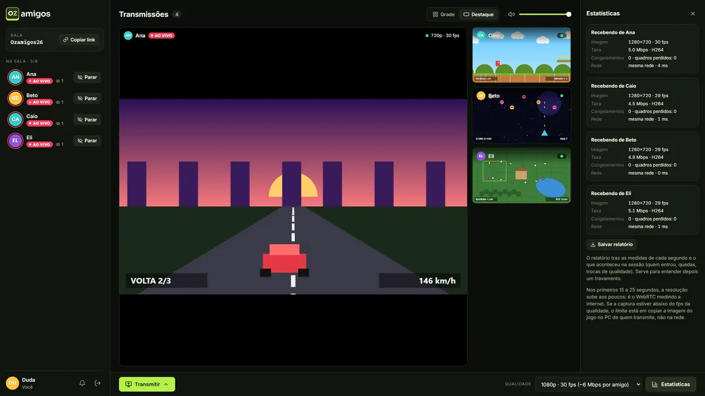
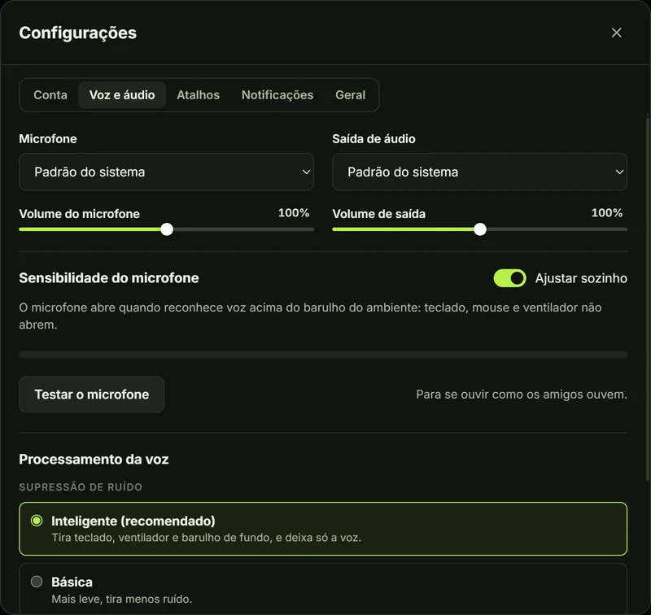
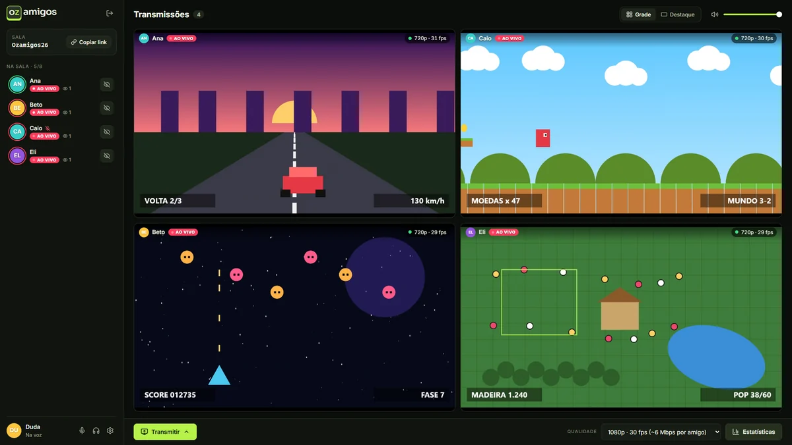

Grátis e de código aberto
Transmita seu jogo. Converse com o grupo.
Vídeo em até 1080p e voz com redução de ruído, direto de um PC para o outro. Salas com senha, todo mundo transmitindo ao mesmo tempo e nenhum outro programa aberto.
Windows 10 e 11, 64 bits
Abra o arquivo baixado. Se o Windows mostrar “O Windows protegeu o computador”, clique em Mais informações e depois em Executar assim mesmo.

Voz que não atrapalha o jogo
Entrou na sala, já está na conversa. O microfone só abre quando você fala, e o barulho de fundo fica no seu quarto.
- Redução de ruído RNNoise
- 60 a 90 ms na mesma rede
- Sem outro programa
-
Só a sua voz chega
A rede neural RNNoise roda no seu PC e tira teclado, mouse e ventilador antes de a voz sair.
-
Sensibilidade automática
O microfone abre quando reconhece voz acima do barulho do ambiente. Prefere ajustar? Arraste o limite sobre o medidor.
-
Cada amigo no volume certo
Microfone e som a um clique, volume de cada amigo até 200%, "silenciar para mim", e a escolha do microfone e da saída de áudio.
-
Rápida e leve
A voz tem a própria conexão, separada do vídeo, e pesa 64 kbps por amigo, quase nada enquanto você fica quieto.

Feito para jogar junto
Tudo o que o grupo precisa para assistir a partida dos amigos, sem complicação.
-
Liso, sem travar
720p ou 1080p, com pouco atraso para quem assiste. Se o PC ou a internet não derem conta, a imagem diminui em vez de travar.
-
Todos transmitem juntos
Salas de até 8 pessoas. Assista uma ou várias transmissões, em grade ou com uma em destaque.
-
Som do jogo sem eco
O app transmite o som do PC sem a voz dos amigos e sem as transmissões que você assiste: ninguém se ouve de volta.
-
Janela flutuante
Solte uma transmissão numa janelinha que fica por cima do jogo.
-
Só para o seu grupo
Salas protegidas pela senha do grupo. O vídeo vai direto de um PC para o outro.
-
Sempre atualizado
O app se atualiza sozinho ao abrir e volta para a sala se a internet oscilar.
App ou navegador?
Os dois entram nas mesmas salas e conversam juntos. O app para Windows faz o que o navegador não consegue: manda o som do jogo sem a voz dos amigos junto.
| Recurso | App para Windows | Navegador |
|---|---|---|
| Assistir e transmitir em até 1080p | ||
| Voz com redução de ruído | ||
| Várias transmissões ao mesmo tempo | ||
| Som do jogo sem eco | ||
| Seletor de janelas com miniaturas | ||
| Sem engasgos com o jogo na frente | ||
| Funciona sem instalar nada |
Como funciona
-
Instale o app
Baixe o instalador e abra. Daí em diante, ele se atualiza sozinho.
-
Entre com a senha do grupo
Escolha como os amigos te chamam e use a senha que quem te convidou passou.
-
Chame os amigos e jogue
Copie o link da sala e mande para o grupo. Quem entra já está na conversa; para mostrar o jogo, clique em Transmitir.

Privacidade
Seus dados ficam com você. Nem este site nem o app usam cookies ou ferramentas de análise.
- Sem cadastro
- Sem anúncios
- Sem rastreamento
-
No seu computador
Nome, senha do grupo e preferências ficam guardados só no seu navegador ou no app. A redução de ruído também roda aqui: o som do seu quarto não sai do PC.
-
No servidor
Ele confere a senha e apresenta as pessoas da sala. As salas vivem só na memória e somem quando todos saem; o registro técnico não tem nome nem senha. Quem erra a senha tem o IP guardado na memória por 5 minutos, para frear quem tenta adivinhar.
-
Entre os PCs
Voz, vídeo e som vão direto de um PC para o outro, sempre criptografados. Como em toda conexão direta, quem está na sala vê o IP dos outros: use com quem você conhece.
Como qualquer site, o GitHub, o Render (com a Cloudflare na frente) e os servidores do Google e da Cloudflare que ajudam os PCs a se encontrarem (STUN) recebem o IP de quem acessa. O código é aberto: confira no GitHub.
Dúvidas
Não achou sua resposta? Pergunte no GitHub.
O Windows disse que protegeu o computador. É seguro?
O aviso aparece porque o instalador não tem assinatura digital paga. Clique em Mais informações e depois em Executar assim mesmo. O código é aberto, e cada instalador é gerado pelo GitHub a partir dele, com um histórico público de cada versão.
Preciso de senha?
Sim, a senha do grupo. Peça para quem te convidou: ela impede que estranhos entrem nas salas.
É de graça?
Sim. O Ozamigos é gratuito e de código aberto, com licença MIT.
Dá para usar sem instalar?
Dá. A versão portátil abre com dois cliques e está na página de downloads. Ou use pelo navegador (Chrome ou Edge), com voz e tudo. Só o som do jogo vai sem a separação que o app faz.
Preciso de outro programa para conversar?
Não. A voz é do próprio Ozamigos: quem entra na sala já está na conversa, com redução de ruído, mudo, volume de cada amigo e escolha do microfone e da saída de áudio.
A voz tem atraso?
Pouco. Ela vai direto de um PC para o outro, numa conexão só dela. Na nossa bancada, na mesma rede, a voz chega em 60 a 90 ms; pela internet, soma-se o tempo que os pacotes levam entre as casas.
Funciona no Mac, no Linux ou no celular?
O app é só para Windows 10 e 11. Nos outros sistemas, use pelo navegador Chrome ou Edge no computador.
A minha voz ou o meu vídeo passam por algum servidor?
Não. O servidor só apresenta as pessoas da sala e confere a senha. A voz vai direto para cada amigo, e o vídeo e o som do jogo vão de quem transmite só para quem clicou em Assistir, por WebRTC.
Por que o navegador às vezes demora para abrir a sala?
O servidor fica num plano gratuito que “cochila” quando ninguém usa. A primeira visita depois de um tempo pode levar até um minuto; depois disso, abre na hora.
Bora jogar junto?
Windows 10 e 11, 64 bits
Abra o arquivo baixado. Se o Windows mostrar “O Windows protegeu o computador”, clique em Mais informações e depois em Executar assim mesmo.